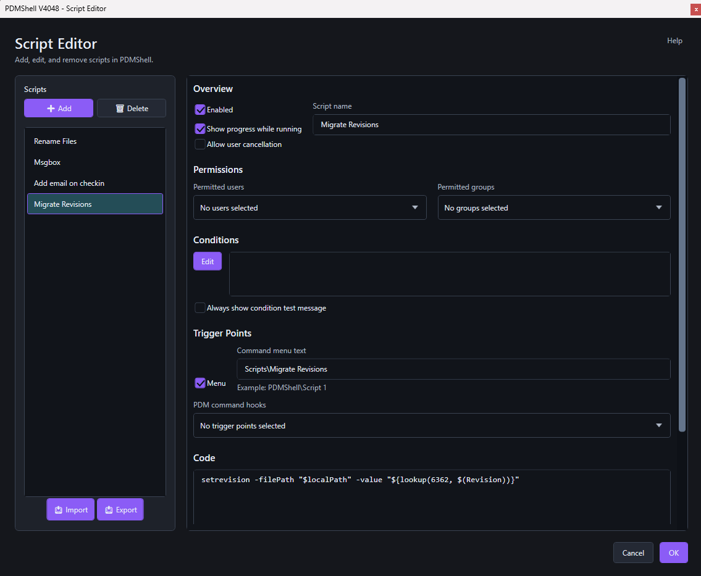

PDMShell add-in
The PDMShell add-in lets SOLIDWORKS PDM administrators run .pdmshell scripts directly from PDM menus and PDM event trigger points. It is designed for the same class of automation normally handled with Dispatch: user commands, event-driven rules, file and folder automation, condition checks, and administrator-controlled deployment.
Instead of building automation from a fixed list of Dispatch actions, the add-in runs PDMShell scripts. This gives administrators access to the PDMShell command engine, the visual script editor, dynamic placeholders, PDM variables, and headless execution through pdmcli.exe.
Note
The PDMShell add-in is included with the premium version. You can download it from your Blue Byte Systems Inc account or deploy it with PDMDeploy.

What you can automate
- Add right-click commands such as
PDMShell\Rename Files. - Create SOLIDWORKS PDM Tasks that run PDMShell scripts, similar to the built-in Convert task.
- Run scripts before or after checkout, check-in, undo checkout, state change, add, delete, move, copy, rename, get, label, card button, and folder commands.
- Restrict scripts to selected PDM users or groups.
- Validate conditions before a script runs.
- Pass selected files and folders to PDMShell with
runscript -items. - Test condition values with a message before enabling production automation.
Documentation
| Article | Use it for |
|---|---|
| Installation and access | Loading the add-in and opening the Script Editor |
| Script Editor | Creating, cloning, saving, and editing script entries |
| Permissions | Limiting scripts to users and groups |
| Conditions | Building wait-style condition expressions |
| Command menu scripts | Adding right-click PDM menu commands |
| PDM Tasks | Creating SOLIDWORKS PDM Tasks that run PDMShell scripts |
| Event trigger points | Running scripts from PDM command hooks |
| Placeholders and command context | Using file, folder, command, and variable placeholders |
| Runtime execution | Understanding pdmcli.exe, headless mode, and -items |
| Testing and troubleshooting | Validating scripts and diagnosing common issues |
Dispatch comparison
Dispatch action scripts typically combine triggers, conditions, variables, and actions. The PDMShell add-in uses a similar administrator workflow, but the action body is a PDMShell script.
| Dispatch idea | PDMShell add-in equivalent |
|---|---|
| Action script | A configured PDMShell script |
| Administrative action | Script configured in the Script Editor |
| Menu command activation | Menu trigger with command menu text |
| PDM task | PDMShell task add-in running a .pdmshell script |
| PDM event activation | Trigger points such as checkout, check-in, state change, add, delete, move, copy, rename, and folder events |
| Conditions | PDMShell wait-style condition expression |
| Variables | PDMShell placeholders and PDM variable placeholders |
| Shell execute action | pdmcli.exe running the configured .pdmshell script |
| Debugging a script | Condition test message, visual script editor, and standalone pdmcli.exe -edit |
Recommended rollout
- Build and test the
.pdmshellscript outside the add-in. - Add the script in the Script Editor.
- Enable the condition test message while validating conditions.
- Configure permissions for a small administrator group first.
- Enable a command menu or trigger point.
- Test against a small set of files.
- Expand permissions after the automation behaves as expected.